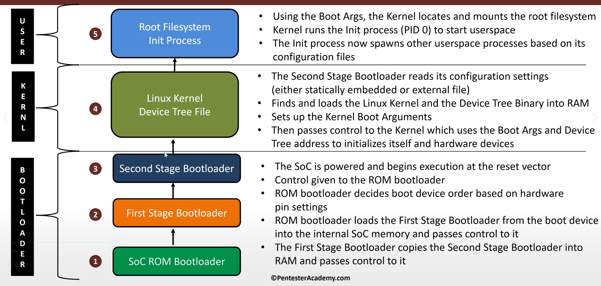
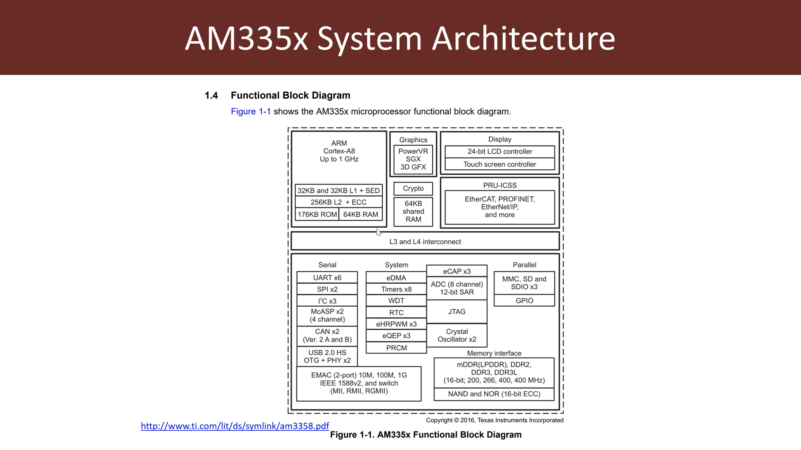
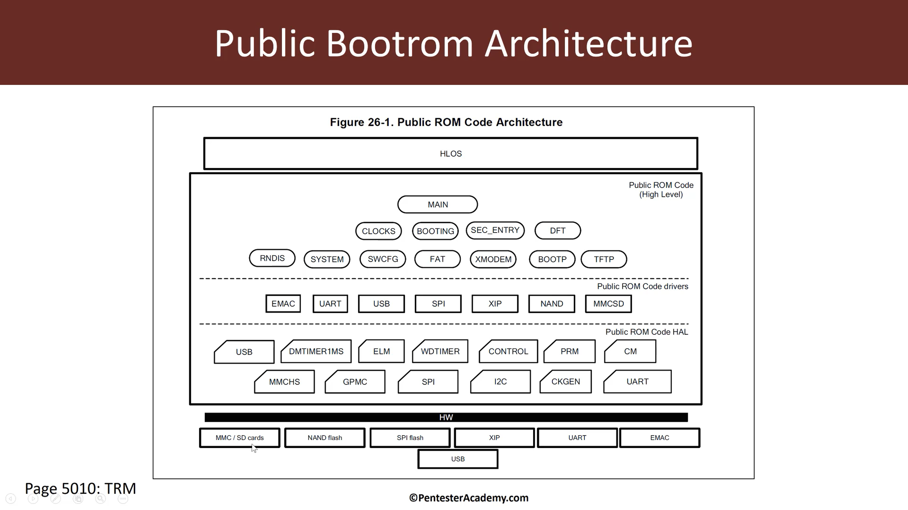
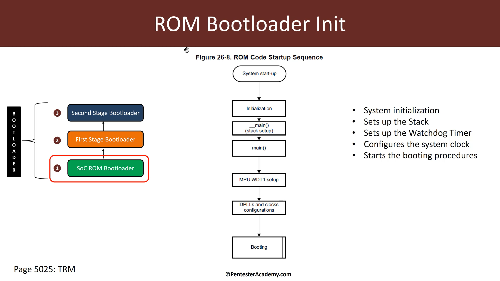
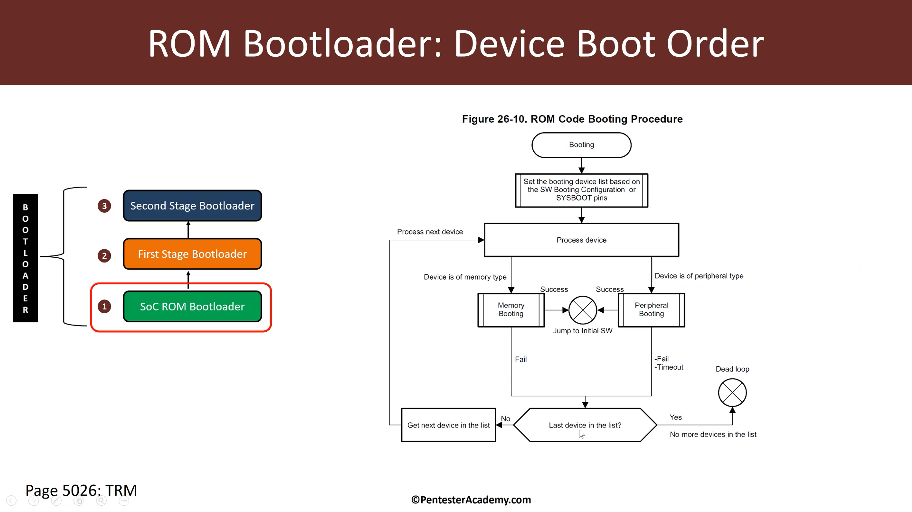
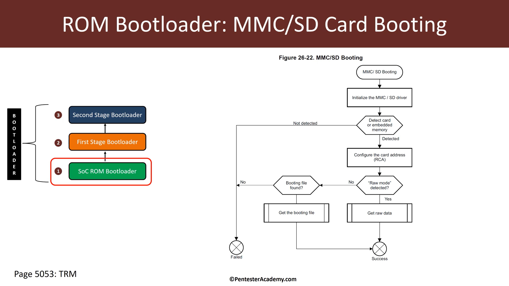
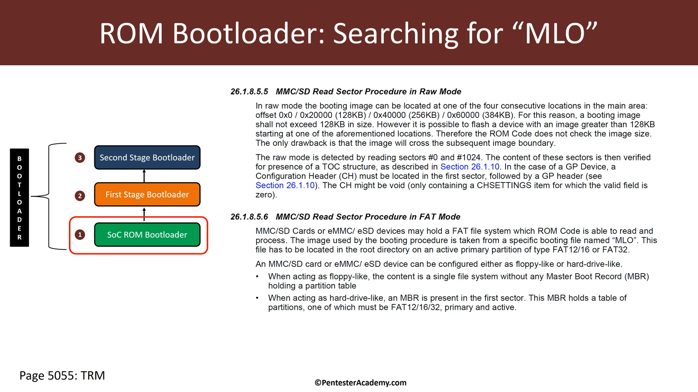
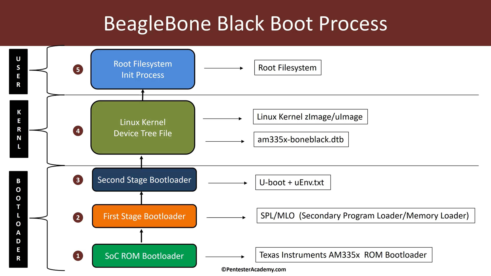
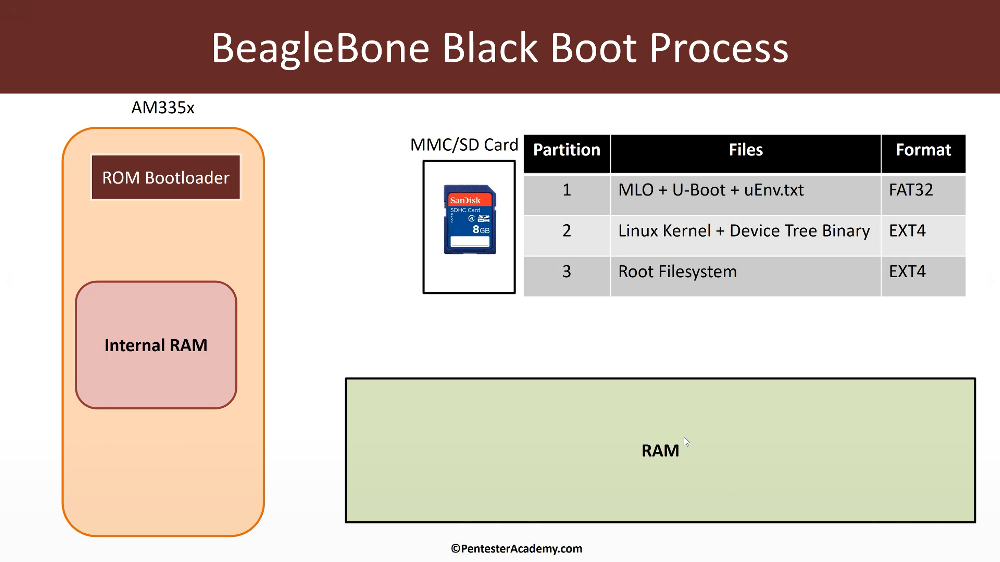

iot rootkit 学习(week 1-1)
记录下week1的学习
Embedded Linux Boot Process

soC ROM Bootloader
当soc被启动时首先启动reset vector——复位向量
这是制造商提前编程好的东西
然后会吧控制权给soC ROM Bootloader
soC ROM Bootloader会启动一些基本硬件
然后开始在Boot Device中寻找First Stage Bootloader，并把控制权给予First Stage Bootloader
First Stage Bootloader
First Stage Bootloader会找到Second Stage Bootloader
并将其载入RAM中，然后把控制权转移给Second Stage Bootloader
这边作者也提及了一些注意点
比如说pass control而不是call
因为如果是call的话，在运行结束后会return
而事实不是这样，当First Stage Bootloader将控制权给Second Stage Bootloader后
要等到下一次启动，First Stage Bootloader才会启动
还有关于stage的，这边只提及有俩个阶段，然而事实上这都要依赖于嵌入式系统，没准有很多阶段。
Second Stage Bootloader
Second Stage Bootloader的责任是把内核还有设备树载入到RAM中
然后根据自己的配置，启动内核还有内核引导程序后把控制权给Linux Kernel
Kernel
内核会初始化许多硬件，然后寻找引导程序并定位Root Filesystem,然后运行他
如果运行成功内核会在Root Filesystem中寻找初始化程序
//后面没听懂作者在讲啥，英语有点渣
BBB
//作者在这边吐槽惊叹了很多
AM3358

176kb ROM
64kb RAM
64kb shared RAM
存储器不怎么大
//这边后面会解释原因
//成本问题
Public Bootrom Architecture

作者在这边讲的大概是关于这玩意的硬件支持和软件支持
ROM Bootloader Init

首先是系统的启动然后初始化了许多基础的东西
然后进入主程序(main routine)把栈建立
接着会启动看门狗定时器(WDT)
这边来解释下WDT
看门狗定时器（WDT，Watch Dog Timer）是单片机的一个组成部分，它实际上是一个计数器，一般给看门狗一个数字，程序开始运行后看门狗开始倒计数。如果程序运行正常，过一段时间CPU应发出指令让看门狗复位，重新开始倒计数。如果看门狗减到0就认为程序没有正常工作，强制整个系统复位。___from baidu
WDT倒计时是3min
给引导程序来寻找First Stage Bootloader
WDT完事后就是设置时钟
接着就是引导下一阶段
下面作者讲的大概是在ROM Bootloader Init完后是如何启动各种设备的
ROM Bootloader: Device Boot Order

至于引导下一阶段，首先要找到下一阶段在哪？
首先肯定不在系统芯片内，因为系统芯片AM3358的ROM没有那么大
所以必须在外部寻找
那如何找呢？
这是由设计者通过某种方式来让ROM Bootloader知道如何引导下一阶段。。。
//其实是我没听懂
//但看流程图的话，貌似是一个一个的寻找
//直到定位到就停下
//否则失败
ROM Bootloader: MMC/SD Caed Booting

ROM Bootloader初始化驱动，然后根据俩种模式来定位First Stage Bootloader

可以看到有俩种寻址方法
第一种是根据特定的偏移位
第二种是啥我也没听懂。。。正在询问老师中
//吐槽一下下这口音，把MLO听成了”M雷罗”,我也是醉了
//感觉这堆视频看完英语6级听力不用愁(flag)
BBB Boot Process

这边是个总结
soC ROM Bootloader 就是在那个AM3358里的
工作主要是加载下一阶段的引导，主要是SPL和MLO
然后First Stage Bootloader会加载Second Stage Bootloader
使用的引导方式是U-boot
配置文件是uEnv.txt
接着就是引导Linux内核和设备树文件啥的
最后就是整个文件初始化系统进程
How does it work?
总算熬到最后了

可以看到左边是那个芯片
RAM 128KB
ROM 176KB//具体可看上文
还有是我们的SD卡
和系统的RAM
当我们插入SD卡的时候有三个划分
可以看到就是图8的那上面三个
好了，开始总结
1
首先启动芯片
ROM Bootloader开始运行，第一步他会在sd卡中寻找FAT32
然后找然后从中找到MLO，把他肛进RAM
完事
如果没有找到MLO
他会放弃，然后寻找还有啥设备
总结一下，第一步就是找到MLO，把MLO肛进RAM,接着把控制权给MLO
2
然后MLO会找到U-Boot，并把它肛进系统的RAM
然后U-Boot会找到uEnv.txt，同样也是肛进系统的RAM
然后U-Boot会接着找到Linux内核和设备树
至于怎么找//因为由俩个EXT4嘛
其实这些信息都在uEnv.txt中
U-Boot把Linux内核和设备树肛进系统的RAM
并引导，然后把控制权给内核
内核会运行Root Filesystem，然后运行在系统RAM的初始化程序
然后初始化程序会初始化用户空间进程
解答问题
1.要MLO有个卵用？为什么不直接把U-Boot肛进RAM然后运行？
因为存储器不够大，而U-Boot太大了
成本太贵。。。只能这样
估计用的是SRAM
2.既然不能直接载入soc内部RAM，为什么不直接载入系统RAM呢？
因为系统芯片不知道你的外设是啥
ROM Bootloader不知道如何把U-Boot载入系统RAM
但是MLO知道
所以可以通过MLO来间接把U-Boot肛进系统RAM
喜大普奔
30多分钟视频看了2天
总算稍微看懂点了
起码不是一脸懵逼